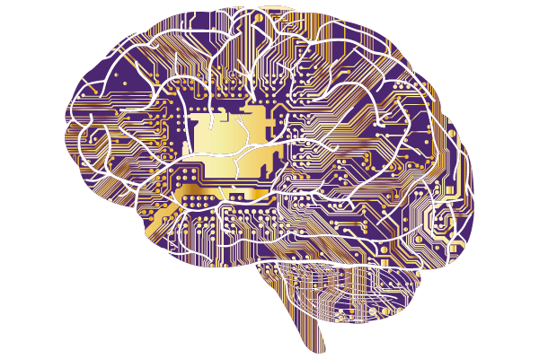

WHAT IS AI ?
is intelligence demonstrated by machines, in contrast to the natural intelligence displayed by humans and animals.
Leading AI textbooks define the field as the study of "intelligent agents": any device that perceives its environment and
takes actions that maximize its chance of successfully achieving its goals. Colloquially, the term "artificial intelligence"
is often used to describe machines (or computers) that mimic "cognitive" functions that humans associate with the human mind,
such as "learning" and "problem solving".
As machines become increasingly capable, tasks considered to require "intelligence" are often removed from the definition of
AI, a phenomenon known as the AI effect. A quip in Tesler's Theorem says "AI is whatever hasn't been done yet." For instance,
optical character recognition is frequently excluded from things considered to be AI, having become a routine technology.
Modern machine capabilities generally classified as AI include successfully understanding human speech, competing at the
highest level in strategic game systems (such as chess and Go), autonomously operating cars, intelligent routing in content
delivery networks, and military simulations
| Advantages |
Disadvantages |
| Error Reduction |
High Cost |
| No Breaks |
Unemployment |

Links
- Advantages of AI
- importance of AI
- Application of AI
- Disadvantages of AI